Mechanical engineer specializing in robotics, with a First Class BEng in Mechanical Engineering with minor in robotics from UCL and an ongoing MSc in Human and Biological Robotics at Imperial College London.
UCL BEng Final Year Project
Designed a 2-DOF control handle that replicates the natural push-pull and rotation of catheterization, replacing the four-joystick console on an existing MR-conditional heart catheterisation robot.
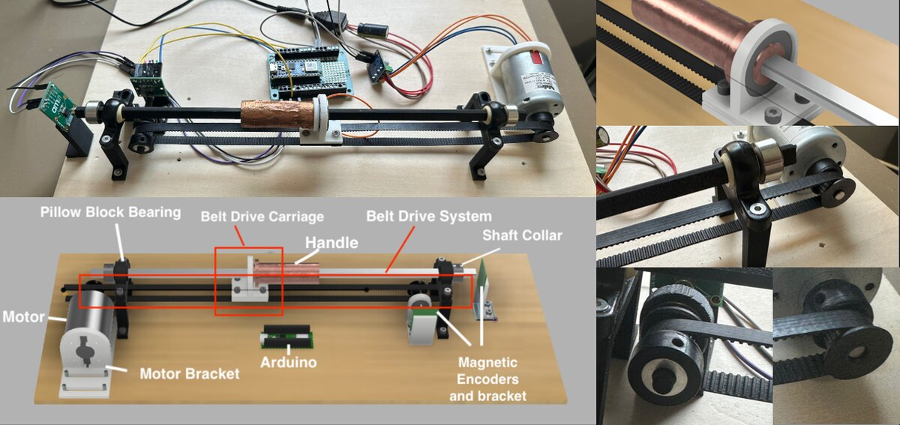
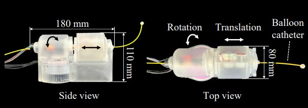
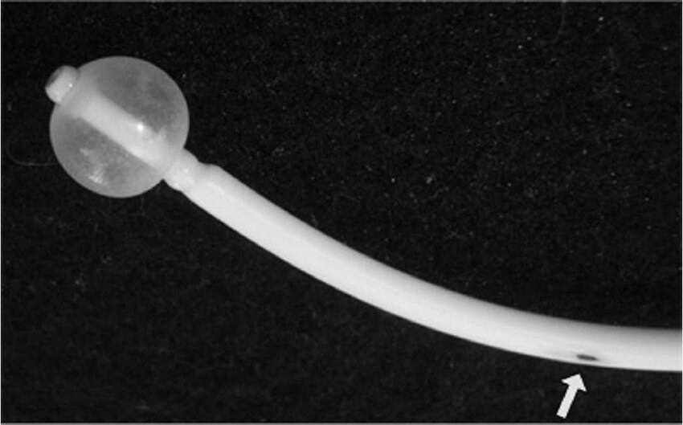
The console has been validated on the bench. The next step is integrating it with the robot for further functional testing, followed by phantom testing.
Read the final report (PDF)UCL Racing — Unmanned Aerial Systems (UAS) Team Nova
Led propulsion sub-team in designing the power and thrust systems for a blended-wing VTOL aircraft, winning the 2026 IMechE UAS Challenge Design Award.
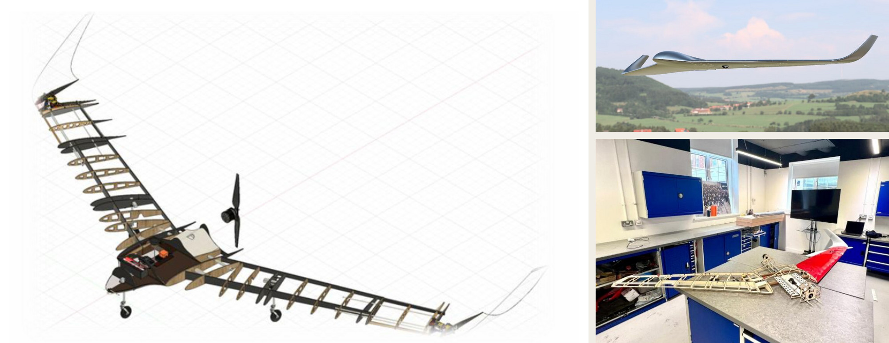
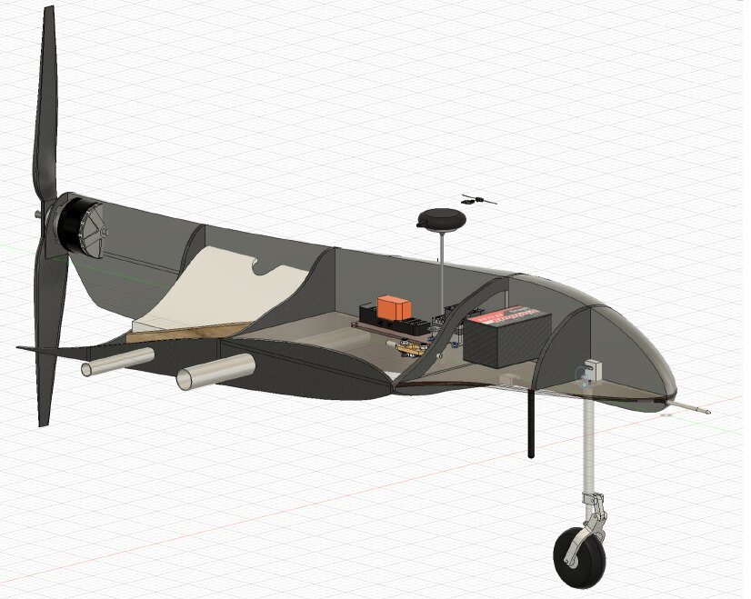
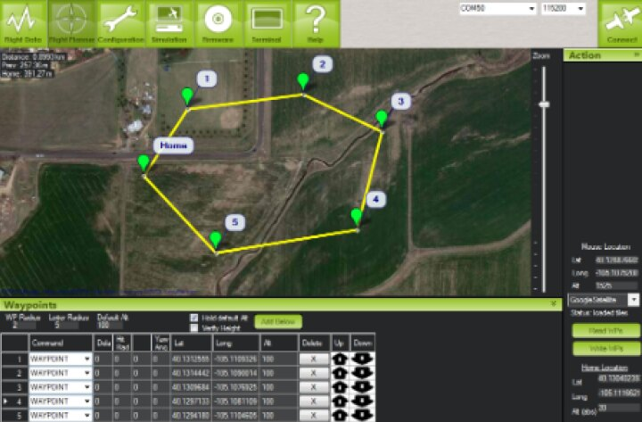
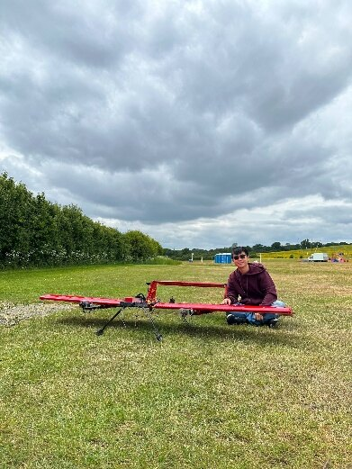
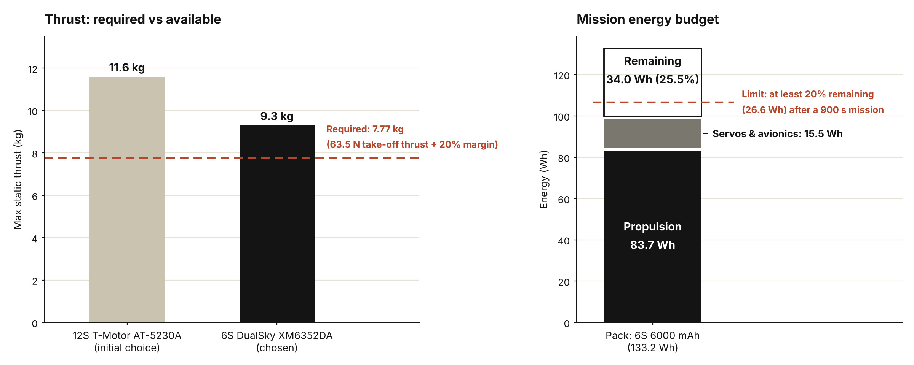
Designed a pump impeller for a ventricular assist device, targeting a 0.8 bar pressure head and 75 L/min flow rate while keeping shear stress within safe limits for blood.
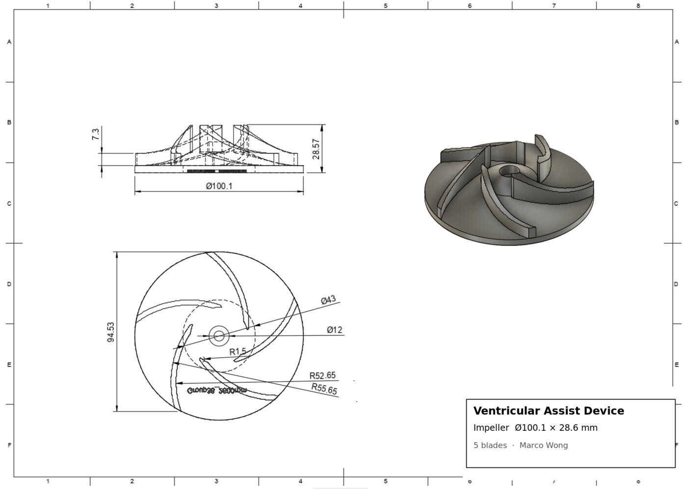
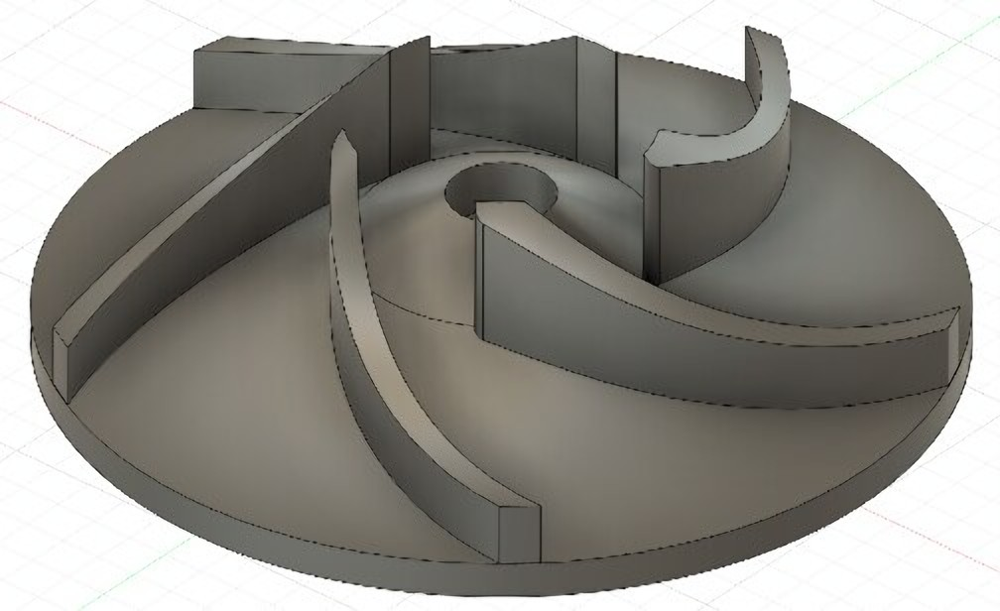
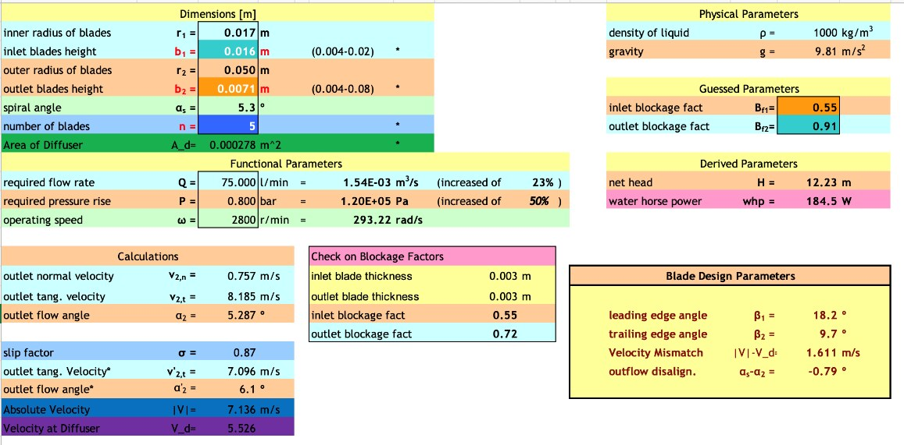
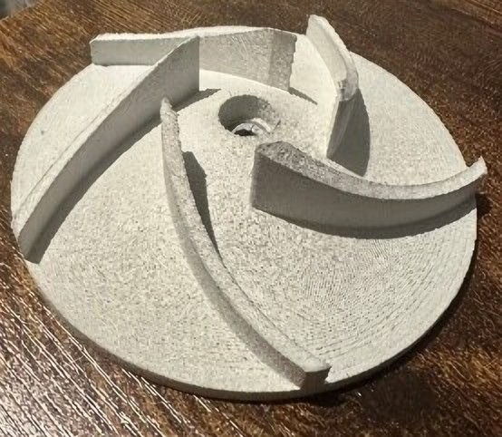
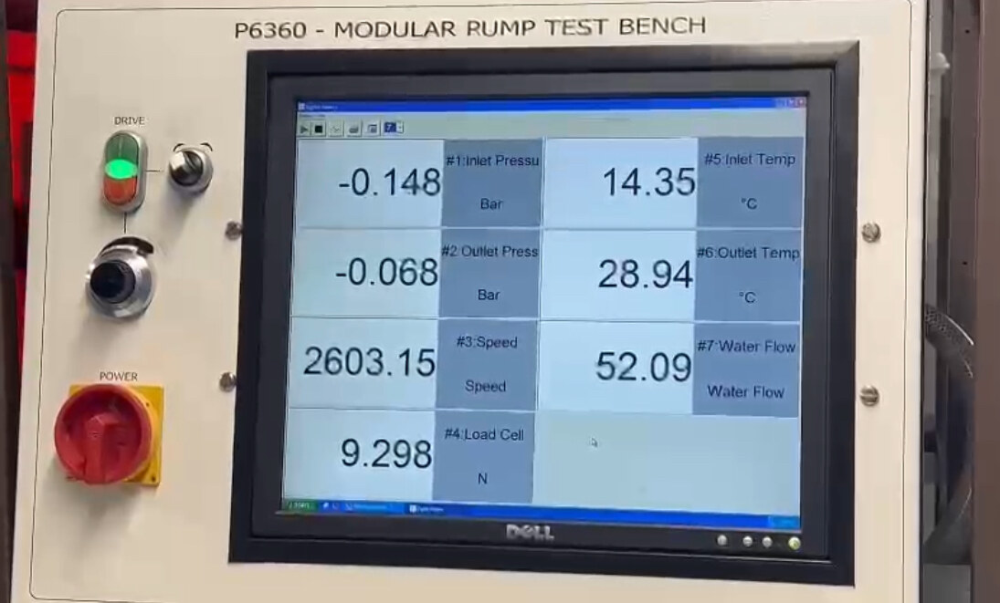